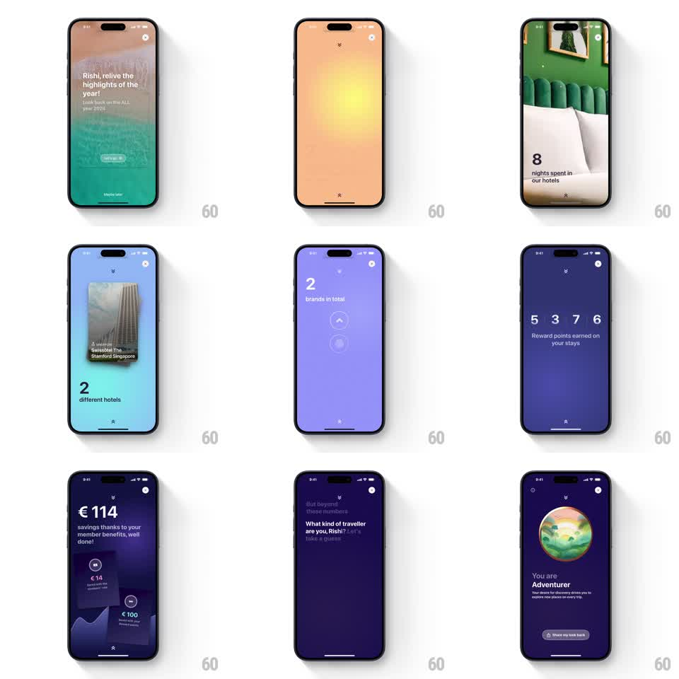

Media
Frame-by-frame

Rebuild this animation 1:1: ALL's year-in-review story sequence - a multi-step personalized recap (intro card, photo-backed stat screens, odometer counters, a quiz, and a persona reveal with a spinning globe) stitched together with story-style swipes.

Rebuild this animation 1:1: ALL's year-in-review story sequence - a multi-step personalized recap (intro card, photo-backed stat screens, odometer counters, a quiz, and a persona reveal with a spinning globe) stitched together with story-style swipes.
## Integration
Integration: stack-agnostic spec - springs given as stiffness/damping, timed motions as duration + curve; map every value to your framework and animation library of choice.
## Scene
A full-screen story flow with a segmented progress bar at top. The sequence: an intro card over a hotel photo ("Rishi, relive the highlights of the year!", "Let's go" button); gradient wipe transitions; stat screens like "8 nights spent in our hotels" over room photography, "2 different hotels" with a tilted photo card stack, and "2 brands in total" on purple; an odometer readout "5 3 7 6 Reward points earned on your stays"; a savings screen "€114" with benefit cards stacked below; a quiz step "What kind of traveller are you, Rishi?"; and a persona reveal - "You are Adventurer" under a spinning painted globe with a "Share my look back" button.
## Motion spec
Pattern: story swipe sequence with odometer counts, swipe-driven.
- Swiping advances the story: each screen slides in from the right (spring stiffness 300 damping 28) while the progress bar's active segment fills over a 5s auto-advance.
- Gradient screens bloom between steps: radial light gradients expand from center (600ms, ease-out) carrying the background color change.
- Stat numbers count up: the points readout rolls digit by digit like an odometer (each digit settling in 400ms, rightmost first), and "€114" counts up over 800ms.
- Photo elements enter with parallax: card stacks fan out with a slight tilt (spring stiffness 260 damping 20).
- The finale globe spins continuously (12s per revolution) as the persona text scales in (spring stiffness 340 damping 20).
## Calibration
- Each stat screen owns one bold number and one short label - text is sparse, photography does the work.
- Transitions are wipes and blooms, never plain cuts.
## Reduced motion
Screens crossfade; numbers appear final.
## Don't miss
- The progress bar segments persist at top through every screen.
- The odometer digits align in a row - each digit its own rolling column.